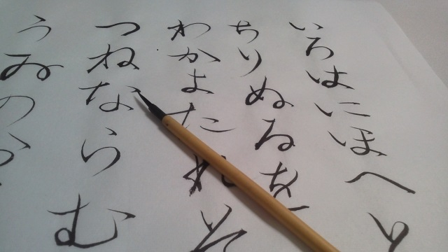

前回の記事では万年筆展について書きました。ご存じの通り（？）わたしは物欲の権化のような人間なので、案の定その後すぐに万年筆がほしくなり、軽くお店を巡ってみました。
万年筆というのは現代の筆記具としては結構面倒な代物で、人によってペン先の合う合わないがあります。そのため買う際には必ず試し書きをするわけです。ボールペンのようにインクの出方を確かめるだけではなく、筆記角度や筆圧など、いろいろなポイントをプロの店員にチェックしてもらいながら、自分にとって最高の1本を探します。
実はわたしはこの試し書きの作業がいやでいやでしょうがないのです。なぜなら、自分の文字の下手さが白日の下にさらされてしまうから。
思えば幼い頃から、習字の時間はいつも遊んでばかり。書き順など無駄なものと断じ、好き勝手書いてきた結果、今ではさんさんたる有様。大人になり重要な書類にサインをする機会が増えましたが、その度にいつも憂鬱になります。「この字がこれから長い年月公的に保存されるのか」と思うと、なんとも言えない気分になります。
そんなわけで、今回の万年筆店巡りを切っ掛けに、自分の字の見直しに取りかかる決心をしました。肉体改造ならぬ字体改造です。
幸運にも職場の同僚が書道のプロでもあることを知り、早速仕事の合間にいろいろとアドバイスを求めてみました。そこで分かったのは「字には美しく見える“バランス”が存在する」ということ。漢字を「線の塊」ではなく「シルエット」として見て、正方形や長方形、三角形と、全体の形を考えて書くとよい。この簡潔なアドバイスを一言もらい、少し練習しただけで早くも効果が出始めます。10分ほど練習してみると、これまで30年以上にわたって慣れ親しんだ汚い字体が、全く別物に変わったのです。書道をやっている方であれば、ひょっとしたら至極当たり前の知識なのかもしれません。しかし、全くの門外漢の私にはとても新鮮で感動的なアドバイスでした。
私は塾の講師として生徒に勉強を教えることを生業としていますが、この仕事を長くしていると、あるときふと不安になります。「この程度の当たり前のことを教えるだけでいいんだろうか」と。過大な対価を得ているのではないかと、なんとなく後ろめたい気持ちでしょうか。実際に海外の研究でも教職に就いている人がこのような罪悪感を陥りやすいという研究があるそうです。
しかし、今回自分が生徒の立場になってみて少し意識が変わりました。自分にとっては当たり前のことも他人には当たり前ではない。一言のアドバイスであっても、生徒の現状を見抜き最良のタイミングでそれを投げかけることができたなら、それは値千金です。そう思うと、ほんの少しではありますが自信がわいてきます。